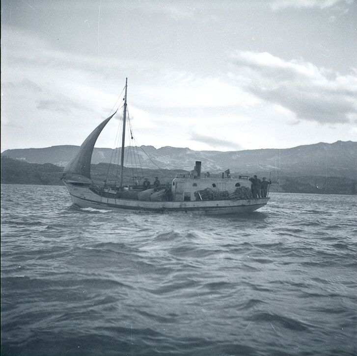
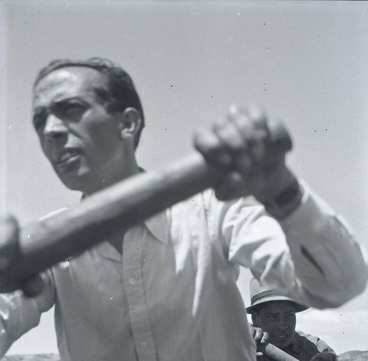
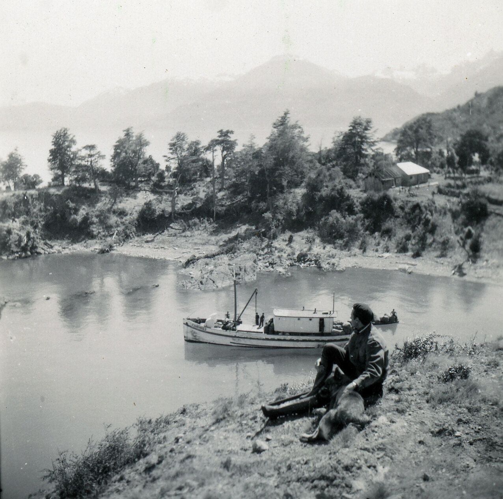
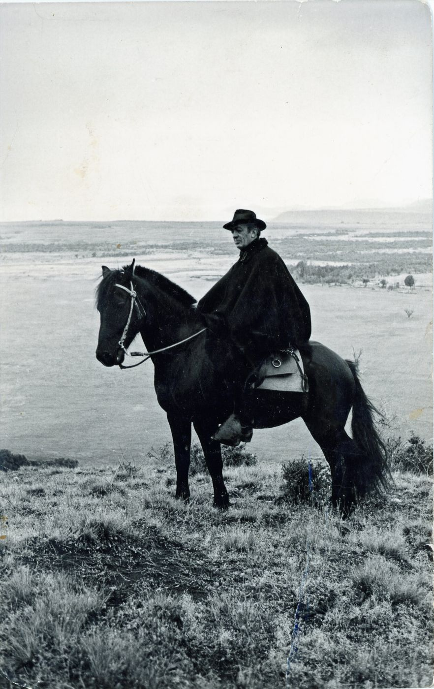
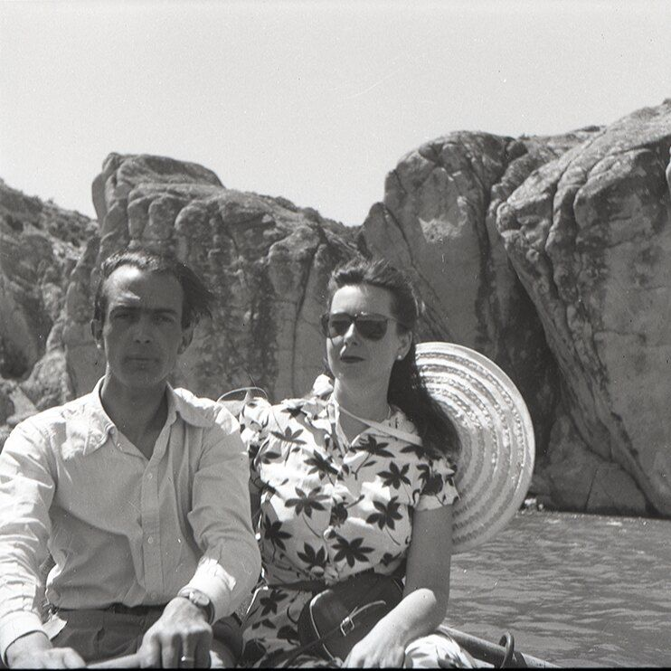
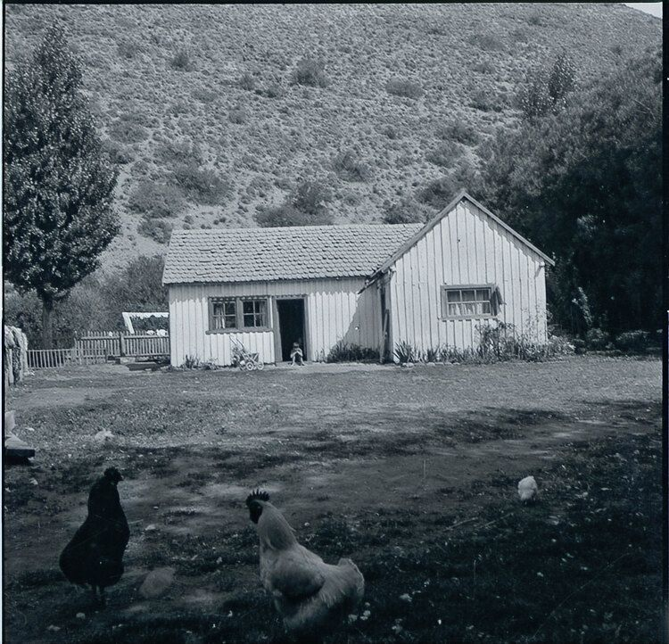
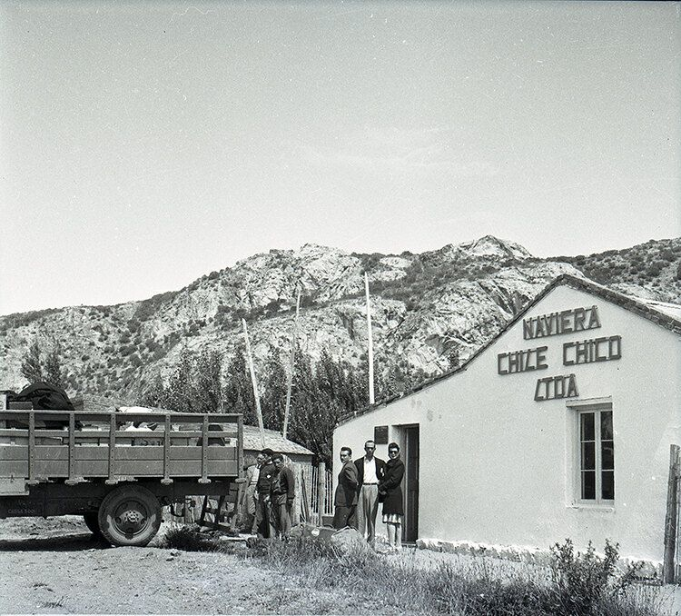
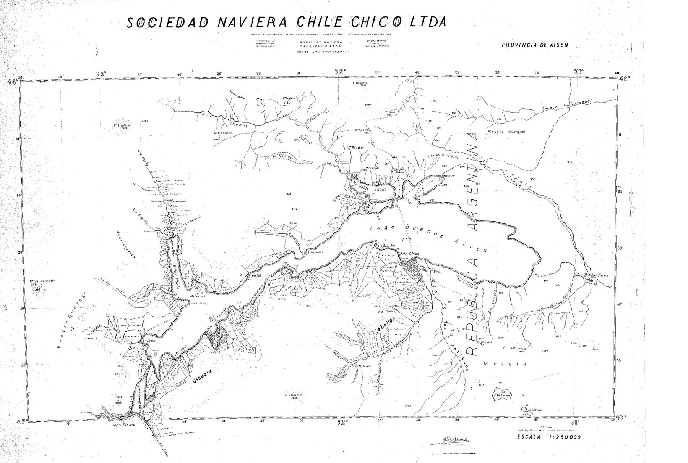
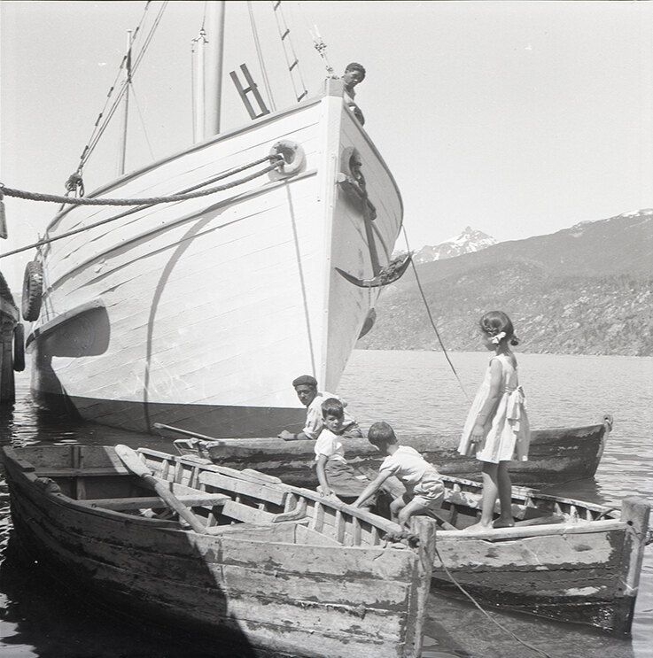
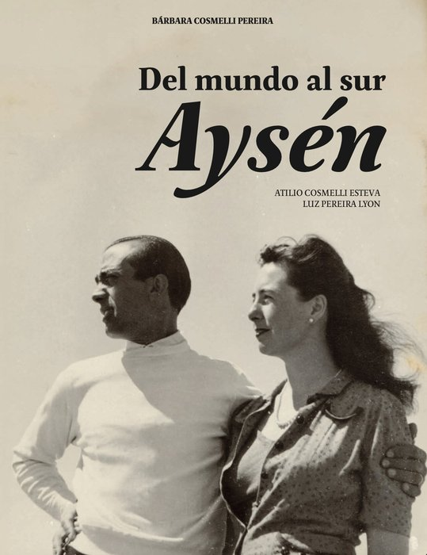

El impulso de explorar, la conexión con el lago General Carrera y la convicción de buscar una vida tranquila los llevó hasta los lugares más potentes de la Patagonia.
A mediados de la década del 40, Atilio Cosmelli Esteva, en ese entonces de 31 años crea la Sociedad Naviera de Chile Chico, una pequeña empresa que se dedicaría al cabotaje en el lago General Carrera y que en esos años, junto a otras pocas embarcaciones que surcaban el lago, se convirtieron en motor de colonización; conectando, llevando insumos y comunicando.

Sus estelas en el agua eran los caminos de nuestra provincia. Los hombres y mujeres que habitaron este lugar se enfrentaron a una naturaleza fuerte y dominante, sus sueños requerían pasos firmes, voluntad y una mirada de largo plazo.
Cada álamo, cada frutal tardaría años en dar frutos y sombra. Lo poco que se producía se cargaría en pilcheros para llevarlo a la Argentina, o se cargaría en los barcos, buscando el mismo destino; para así volver con lo que en nuestra tierra no se podía producir.
Atilio, de familia navegante, había peleado en la Guerra Civil Española, y luego de esta, una necesidad de buscar nuevos puertos despertó en el con fuerza; la soledad y lo por descubrir, parecían algo necesario, las atrocidades de la Guerra Civil despertarían en él una búsqueda, había un hambre de explorar, una necesidad de soledad, una necesidad de encuentro, tal vez con el mismo o con esa inmensidad que te hace sentir pequeño! Chile apareció como un destino y las historias y cuentos de un lugar misterioso e inexplorado parecieron fijarse en la mente de Atilio.

Después de un año de vivir en Magallanes, para aprender del frío, de la soledad, de los caballos y sobre todo, el manejo de la voluntad, ya estaba listo para adentrarse en la tierra prometida, una región desconocida e inhóspita. Su empresa no sería inmediata, en 1941 le encomendaron traer una goleta a vela desde Nueva York a Chile, un viaje que duraría tres meses, luego de esto, ya estaba listo para partir.
Partía, sabiendo en su interior, que volvería por alguien. Compró un caballo y con su manta castilla partió su viaje. Después de meses recorriendo, una tarde ya cansado, mojado hasta los huesos, sin mucha convicción de por qué seguir, se detuvo y se preguntó; “¿Qué hago aquí?”, entonces lejos en un valle vio humo que salía de una pequeña rancha de canogas, un puesto en su versión más rústica y antigua, piso de tierra, madera bruta ensamblada para protegerse del agua y de los vientos que cantan y azotan en nuestra región, un puesto tan sólo como quién lo habitaba, en una naturaleza inmensa y dominante.

Dos perros ladran, sale un hombre del rancho y ve a este viajero mojado, sólo, ¿quién será?, ¿de dónde vendrá?, finalmente ganó la voz de la tierra; “desmonte”, dijo el hombre. Al desmontar Atilio, el hombre vio que nada seco había en su huésped y que el cielo tapado solo amenazaba con seguir mojando; “desensille” , nuevamente la voz de la tierra volvía a retumbar, hoy ya había casa donde alojar.
Ya dentro del rancho, tomando una sopa, llegó a Atilio la respuesta a su pregunta; “por esto estoy aquí, esto es el cielo”, sonó en su mente y abrazo su corazón, las heridas de la guerra parecían cicatrizar en la belleza de la acogida, en la plenitud de lo simple. La soledad ya no era violenta, la voluntad era fuerte, había encontrado su hogar; “Aysén”. Atilio vuelve a Santiago de Chile, ya había encontrado su lugar, un pequeño pueblo fronterizo en la ribera sur del Lago Buenos Aires. Esta vez su viaje tenía otro propósito, en su paso por Valparaíso, luego de haber navegado tres meses a vela desde Nueva York a Chile, había conocido a una mujer. Pocas horas bastaron para compartir sueños y dibujar horizontes, habían hablado de esa tierra misteriosa, de su desconocida ciudad de los cesares. Había sido poco, pero las miradas y palabras habían calado hondo y enraizado lo suficiente, como para que los sueños ya fuesen determinación y la voluntad desbordara en esta aventura de Aysén.

En junio de 1945 Atilio contrae matrimonio con Luz Pereira Lyon. Su familia tenía vínculos en Aysén, por ser su padre Ismael Pereira Iñiguez, fundador y presidente de la Sociedad Ganadera Rio Cisnes Ltda, empresa que operaba la Estancia Río Cisnes, una de las tres grandes concesiones explotadoras de la región y de la cual su familia era la principal accionista.

Lejos de eso, la crianza de Luz tenía más de salones, parques, viajes y cuidados, que del Aysén que le esperaba. Chile Chico suponía un punto perdido para toda su familia, sin conectividad, desconocido, un pueblo de pioneros.
Así, ya había una familia, un lago inmenso por navegar, familias que conectar, lugares por recorrer, casas por levantar, tierras que arar y manos para cosechar.

Desde la cubierta del barco Estrella, un lugar llamaba la atención, sus largas mesetas escondían explanadas cultivables, su exposición norte la hacía ideal para los crudos inviernos de Aysén y así; se soñó la tierra, luego se plantaron álamos, se hicieron canales y potreros, se levantaron casas y puestos, años después el hombre Gaucho cuidaba el ganado. Las tierras de San José, “La Naviera”, nacieron desde el agua y son las que hoy habitamos.

La Naviera fue parte importante de la comunicación, el comercio y el poblamiento de la provincia del General Carrera, las cartas del lago, se dibujaron desde un escritorio, donde Atilio Cosmelli iba plasmando lo que en cada rincón, bahía o corriente descubría. Identificando a cada poblador, cada familia.

En 1958 Atilio Cosmelli fue nombrado intendente de la entonces “Provincia de Aysén” (Región de Aysén), con esto se tuvo que trasladar con toda su familia a Puerto Aysén, la Capital en esos años. Pocos años después, con el hundimiento del barco Estrella, la Sociedad Naviera de Chile Chico dejaba sus actividades de cabotaje en el lago, San José de Mallín Grande, La Naviera, seguiría operando.

Hasta el corazón de lo desconocido,en algún lugar elegido abatieron los coihues,gigantes de nuestros bosques,rozaron los fachinales, y a la orilla de un arroyolevantaron sus taperas de canoas…Después de muchos años, un día germinó la pradera…el tiempo había transcurrido inexorablemente…el cansancio les llevó al lado del fogóndonde hicieron recuento de los mejores años de su vida,de todas sus luchas e ilusiones.Dieron una mirada interior de contemplacióna su campo y a su obra,que en ese momentosilenciosamente legaban a sus hijos…Atilio Cosmelli

Una historia que sigue viva en este lugar
Aysén, del mundo al sur es un relato íntimo sobre los primeros años de vida en este territorio: el viaje, la decisión de quedarse y la construcción de un hogar en la Patagonia profunda.
Hoy, esa misma historia es parte de lo que se vive en La Naviera.
Ver libro